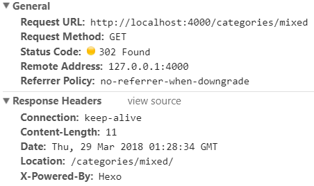

HTTP 状态码简介
HTTP 状态码负责表示客户端 HTTP 请求的返回结果、标记服务器端的处理是否正常、通知出现的错误等工作。
状态码的职责是当客户端向服务器端发送请求时，描述返回的请求结果。借助状态码，用户可以知道服务器端是正常处理了请求，还是出现了错误。
状态码如 200 OK，以 3 位数字和原因短语组成。
数字中的第一位指定了响应类别，后两位无分类。响应类别有以下 5 种。
| 类别 | 原因短语 | |
|---|---|---|
| 1XX | Informational（信息性状态码） | 接收的请求正在处理 |
| 2XX | Success（成功状态码） | 请求正常处理完毕 |
| 3XX | Redirection（重定向状态码） | 需要进行附加操作以完成请求 |
| 4XX | Client Error（客户端错误状态码） | 服务器无法处理请求 |
| 5XX | Server Error（服务器错误状态码） | 服务器处理请求出错 |
算上WebDAV（Web-based Distributed Authoring and Versioning）和附加的 HTTP 状态码，状态码种类就多达 60+，实际常用的大约有14种。
2XX 成功
2XX 的响应结果表明请求被正常处理了。表示从客户端发来的请求在服务器端被正常处理了。
200 OK
在响应报文内，随状态码一起返回的信息会因方法的不同而发生改变。比如，使用 GET 方法时，对应请求资源的实体会作为响应返回；而使用 HEAD 方法时，在响应中只返回首部，不会返回实体的主体部分。
204 No Content
该状态码代表服务器接收的请求已成功处理，但在返回的响应报文中不含实体的主体部分。另外，也不允许返回任何实体的主体。比如，当从浏览器发出请求处理后，返回 204 响应，那么浏览器显示的页面不发生更新。
一般是在只需要从客户端往服务器发送信息，而服务器不需要发送内容的情况下使用。
206 Partial Content
该状态码表示客户端进行了范围请求，而服务器成功执行了这部分的 GET 请求。响应报文中包含由 Content-Range 指定范围的实体内容。
3XX 重定向
3XX 响应结果表明浏览器需要执行某些特殊的处理以正确处理请求。
301 Moved Permanently
永久性重定向。该状态码表示请求的资源已被分配了新的 URI，以后应使用资源现在所指的 URI。也就是说，如果已经把资源对应的 URI 保存为书签了，这时应该按 Location 首部字段提示的 URI 重新保存。
302 Found
临时性重定向。该状态码表示请求的资源已被分配了新的 URI，希望用户（本次）能使用新的 URI 访问。
和 301 Moved Permanently 状态码相似，但 302 状态码代表的资源不是被永久移动，只是临时性质的。换句话说，已移动的资源对应的 URI 将来还有可能发生改变。比如，用户把 URI 保存成书签，但不会像 301 状态码出现时那样去更新书签，而是仍旧保留返回 302 状态码的页面对应的 URI。

302状态码还有一种：【302 Moved Temporarily】，如下图：
关于301和302的详细区别，参考Http状态码之：301、302重定向
303 See Other
该状态码表示由于请求对应的资源存在着另一个 URI，应使用 GET 方法定向获取请求的资源。
303 状态码和 302 Found 状态码有着相同的功能，但 303 状态码明确表示客户端应当采用 GET 方法获取资源，这点与 302 状态码有区别。
比如，当使用 POST 方法访问 CGI 程序，其执行后的处理结果是希望客户端能以 GET 方法重定向到另一个 URI 上去时，返回 303 状态码。虽然 302 Found 状态码也可以实现相同的功能，但这里使用 303 状态码是最理想的。
当 301、302、303 响应状态码返回时，几乎所有的浏览器都会把 POST 改成 GET，并删除请求报文内的主体，之后请求会自动再次发送。
301、302 标准是禁止将 POST 方法改变成 GET 方法的，但实际使用时大家都会这么做。
304 Not Modified
该状态码表示客户端发送附带条件的请求时，服务器端允许请求访问资源，但未满足条件的情况。304 状态码返回时，不包含任何响应的主体部分。304 虽然被划分在 3XX 类别中，但是和重定向没有关系。
附带条件的请求是指采用 GET 方法的请求报文中包含 If-Match，If-Modified-Since，If-None-Match，If-Range，If-Unmodified-Since 中任一首部
307 Temporary Redirect
临时重定向。该状态码与 302 Found 有着相同的含义。尽管 302 标准禁止 POST 变换成 GET，但实际使用时大家并不遵守。
307 会遵照浏览器标准，不会从 POST 变成 GET。但是，对于处理响应时的行为，每种浏览器有可能出现不同的情况。
4XX 客户端错误
4XX 的响应结果表明客户端是发生错误的原因所在。
400 Bad Request
该状态码表示请求报文中存在语法错误。当错误发生时，需修改请求的内容后再次发送请求。另外，浏览器会像 200 OK 一样对待该状态码。
401 Unauthorized
该状态码表示发送的请求需要有通过 HTTP 认证（BASIC 认证、DIGEST 认证）的认证信息。另外若之前已进行过 1 次请求，则表示用 户认证失败。
返回含有 401 的响应必须包含一个适用于被请求资源的 WWW-Authenticate 首部用以质询（challenge）用户信息。当浏览器初次接收到 401 响应，会弹出认证用的对话窗口。
403 Forbidden
该状态码表明对请求资源的访问被服务器拒绝了。服务器端没有必要给出拒绝的详细理由，但如果想作说明的话，可以在实体的主体部分对原因进行描述，这样就能让用户看到了。
未获得文件系统的访问授权，访问权限出现某些问题（从未授权的发送源 IP 地址试图访问）等列举的情况都可能是发生 403 的原因。
404 Not Found
该状态码表明服务器上无法找到请求的资源。除此之外，也可以在服务器端拒绝请求且不想说明理由时使用。
5XX 服务器错误
5XX 的响应结果表明服务器本身发生错误。
500 Internal Server Error
该状态码表明服务器端在执行请求时发生了错误。也有可能是 Web 应用存在的 bug 或某些临时的故障。
503 Service Unavailable
该状态码表明服务器暂时处于超负载或正在进行停机维护，现在无法处理请求。如果事先得知解除以上状况需要的时间，最好写入 RetryAfter 首部字段再返回给客户端。
状态码和状况的不一致
不少返回的状态码响应都是错误的，但是用户可能察觉不到这点。比如 Web 应用程序内部发生错误，状态码依然返回 200 OK，这种情况也经常遇到。
比较 GET 与 POST
来自W3Cschool: 比较 GET 与 POST
下面的表格比较了两种 HTTP 方法：GET 和 POST。
| GET | POST | |
|---|---|---|
| 后退按钮/刷新 | 无害 | 数据会被重新提交（浏览器应该告知用户数据会被重新提交）。 |
| 书签 | 可收藏为书签 | 不可收藏为书签 |
| 缓存 | 能被缓存 | 不能缓存 |
| 编码类型 | application/x-www-form-urlencoded | application/x-www-form-urlencoded 或 multipart/form-data。为二进制数据使用多重编码。 |
| 历史 | 参数保留在浏览器历史中。 | 参数不会保存在浏览器历史中。 |
| 对数据长度的限制 | 是的。当发送数据时，GET 方法向 URL 添加数据；URL 的长度是受限制的（URL 的最大长度是 2048 个字符）。 | 无限制。 |
| 对数据类型的限制 | 只允许 ASCII 字符。 | 没有限制。也允许二进制数据。 |
| 安全性 | 与 POST 相比，GET 的安全性较差，因为所发送的数据是 URL 的一部分。 在发送密码或其他敏感信息时绝不要使用 GET ！ |
POST 比 GET 更安全，因为参数不会被保存在浏览器历史或 web 服务器日志中。 |
| 可见性 | 数据在 URL 中对所有人都是可见的。 | 数据不会显示在 URL 中。 |
本文部分参考自《图解HTTP》
2018.3.29：补上一些图，补上GET和POST方法的区别